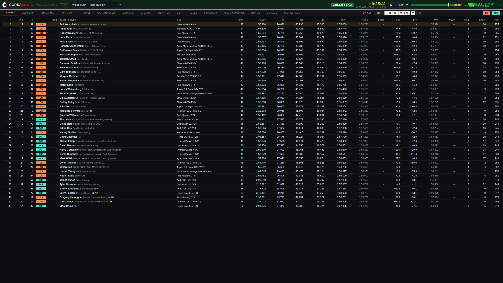
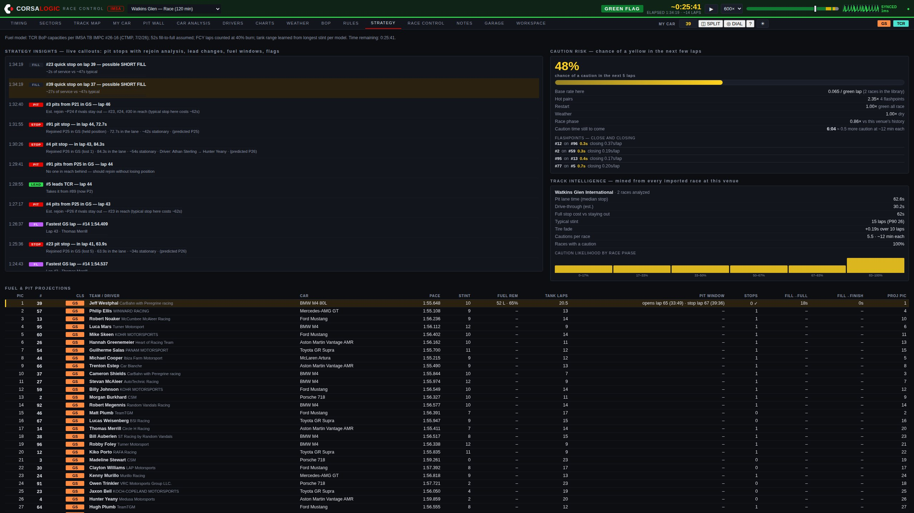
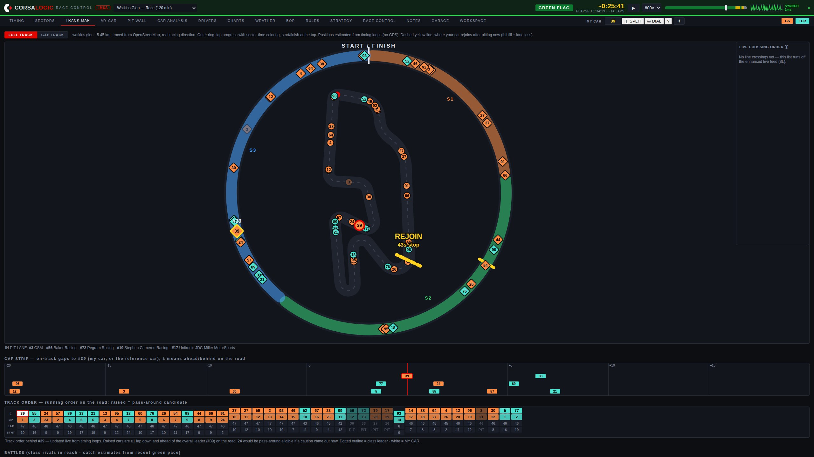
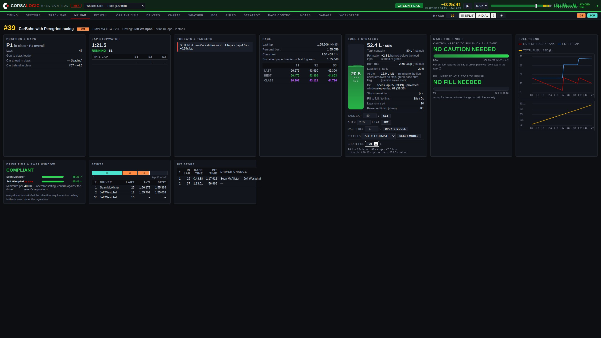
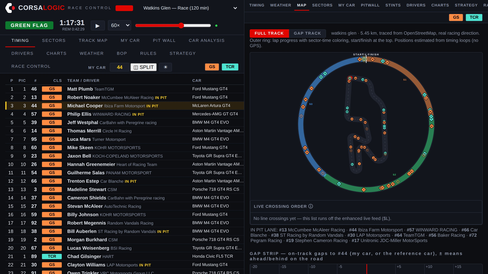

Software
Race Control.
Live timing, strategy, and AI race insights for IMSA competitors — in the browser, on the pit stand, ready before the green flag.

The information a factory team pays a stand full of engineers to watch — read out loud, on time, to your team.

Strategy
An AI race engineer on the feed.
Race Control watches every timing line and calls out what matters, the moment it happens — with predictions built from a library of past races at the same circuit.
- Pit stops, decoded. When a rival pits you get the lap, the time in the lane, and a rejoin prediction — before they're back up to speed.
- Short fills, flagged. A stop far quicker than the field's usual gets called out the moment it happens — with the liters the fill model says actually went in.
- Windows on your lap numbers. Pit windows for the whole field read "opens lap 49 · stop lap 51", not arithmetic you do in your head.
- Track intelligence. Pit-lane loss, stint lengths, caution frequency and timing — mined from real races at this venue, not rules of thumb.

Track position
See the race, not just the column of numbers.
Every car lives on a map of the real circuit, wrapped in a lap-progress ring. Under caution, the safety car is marked and the running order re-forms in front of you.
- Pass-around answers. During full-course yellows, Race Control tells you plainly whether your car is a wave-by candidate — green when you are, red when you're not.
- Live crossing order & gap strip. The physical order on the road from the timing loops, plus a strip of on-track gaps around your car — who's ahead and behind on the tarmac, in seconds.
- Battles ticker. Who's catching whom, at what rate, and how many laps until it matters.

Fuel
The tank, modeled — and corrected by your driver.
A live fuel ledger for your car: a liquid tank gauge with laps of fuel inside it, a lap-by-lap trend chart, and the stop precomputed — down to the seconds of hose time to reach the finish.
- Your numbers. Set the tank capacity and your measured liters-per-lap; every account keeps its own fuel settings, private to your team.
- Dash reports. Radio the fuel reading in, type it once, and the whole model re-anchors to reality — and it all survives a mid-race restart.
- The call, ready. Projected stop lap, fill-to-full and fill-to-finish in seconds at the real fill rate — honest about the physical tank, and about whether one stop is enough.

Workspace
Two screens on one monitor.
Split the screen and dock any second panel on the right — timing beside the track map, or beside weather, your car, the pit wall. The pit-box workspace, on whatever screen you brought.
- Any pairing. The right panel is the full product: every tab, live, with its own data connection.
- No duplication. The right half drops the clock and controls — pure content, and it follows whatever session you're watching.
Everything else a race weekend asks
One login. The whole pit stand.
Timing & analysis suite
Multi-class scoreboard with sectors, bests, gaps and stints — plus the analysis screens professional timing tools charge four figures for: sector comparison, lap analysis, pit stop matrix, gap chart, all-laps tables, and CSV export of everything.
Weather & live radar
Current conditions, hour-by-hour forecast, minutes-to-rain, and animated precipitation radar centered on the circuit.
Balance of Performance
Current GS and TCR BoP in clean tables, with race-to-race changes highlighted the moment a new bulletin drops.
Rulebook, answered
Ask questions in plain English — "can we use a floor jack over the wall if the air jacks fail?" — and get answers cited to the article, straight from the current IMSA regulations.
A library of complete past race weekends, grouped by championship. Re-run any session at any speed — train new crew, review calls, or build next weekend's plan from the last one.
A library that heals itself
Every byte of the live feed is captured raw. If a mid-race dropout ever tears a recording, Race Control rebuilds the complete session from the captures automatically — no one has to notice, because nothing goes missing.
Stewards' corrections
Official best-lap corrections, Retired and Excluded status, and corrected finish data from the stewards' channel flow straight into the running order.
INDYCAR, too
Race Control for the NTT INDYCAR SERIES runs as its own product at indycar.corsalogic.com — separate accounts, separate data, the same cockpit.
How it works
Nothing to install. Race Control runs in the browser — pit stand, garage, or the couch back home — and reads the same live timing feed the series broadcasts trackside. If the internet at the circuit fails you, the cloud timing path keeps the data flowing.
Per-seat accounts. Each team seat gets its own login. Access is activated on payment, and everything your crew sees stays inside your account.
Built by a race engineer. Race Control is developed and run by CorsaLogic and used on our own pit stand. When something matters to the call, it matters to the product.
Put Race Control on your stand this season.
Request accessRace Control presents timing data originating from series timing providers; that data remains the property of its owners. Strategy outputs, projections, and race-procedure indications (including pass-around eligibility) are advisory — official determinations always belong to the sanctioning body. CorsaLogic Race Control is an independent product and is not affiliated with or endorsed by IMSA.